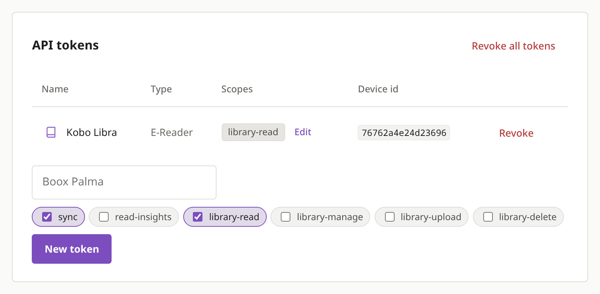
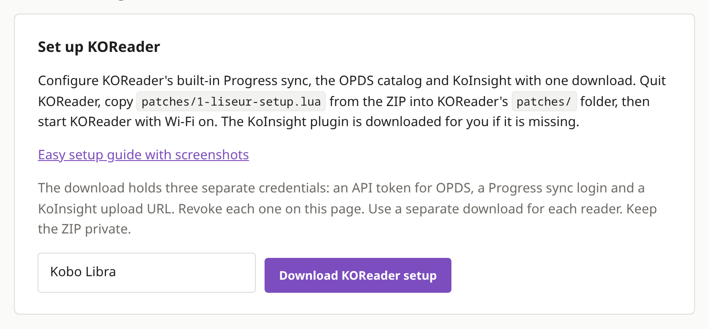
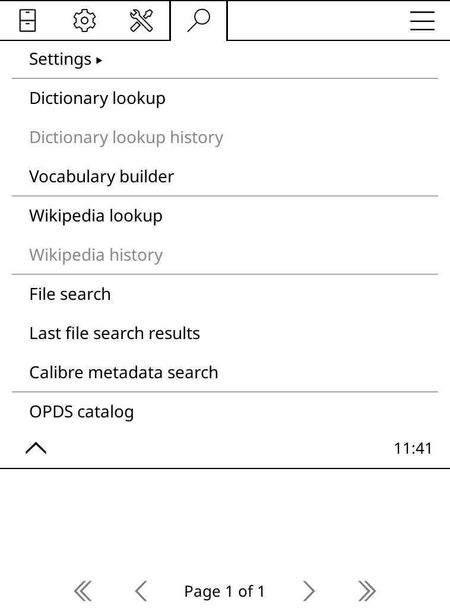
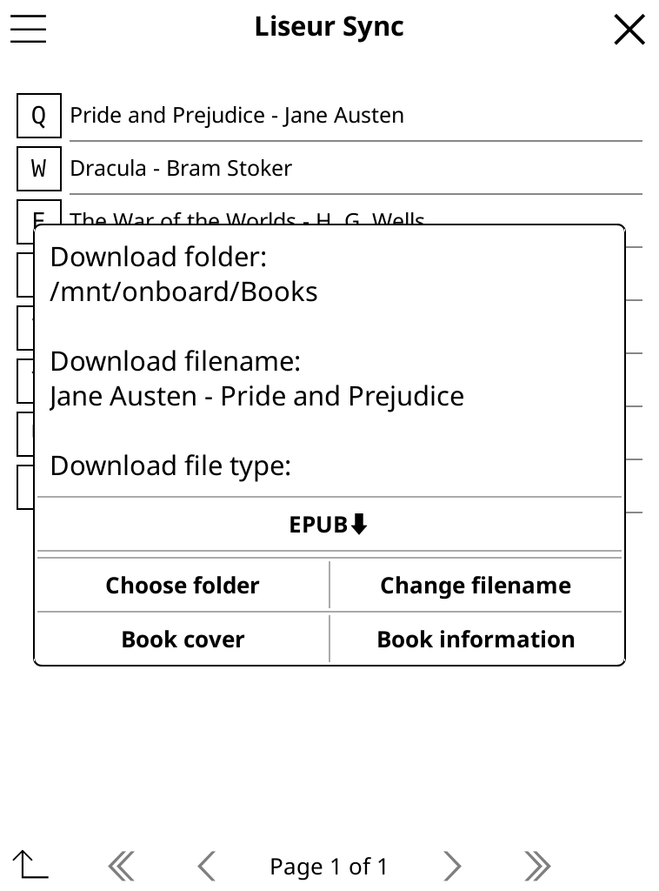
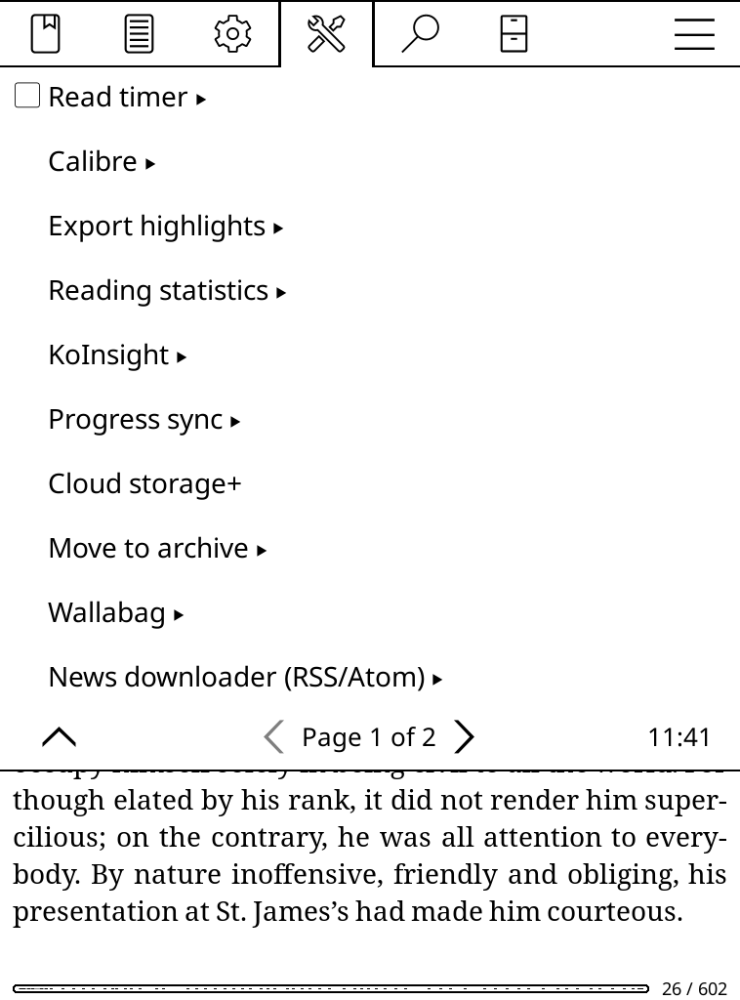
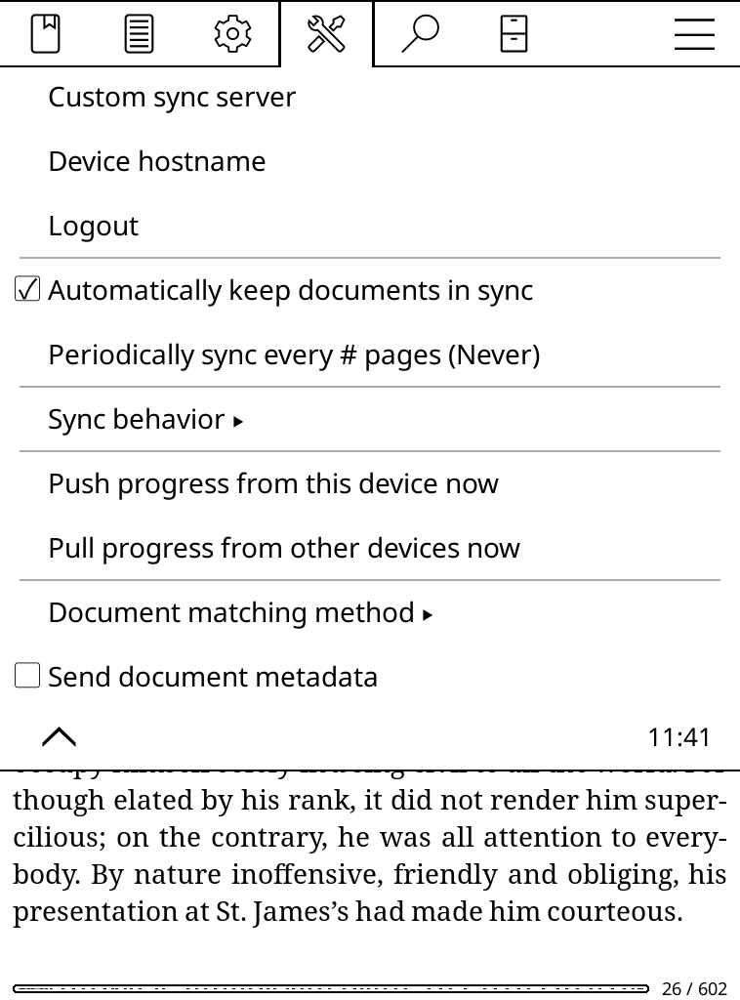
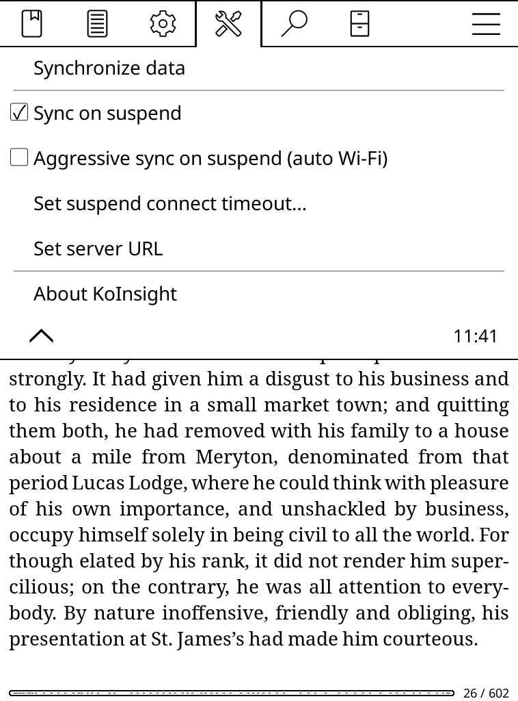
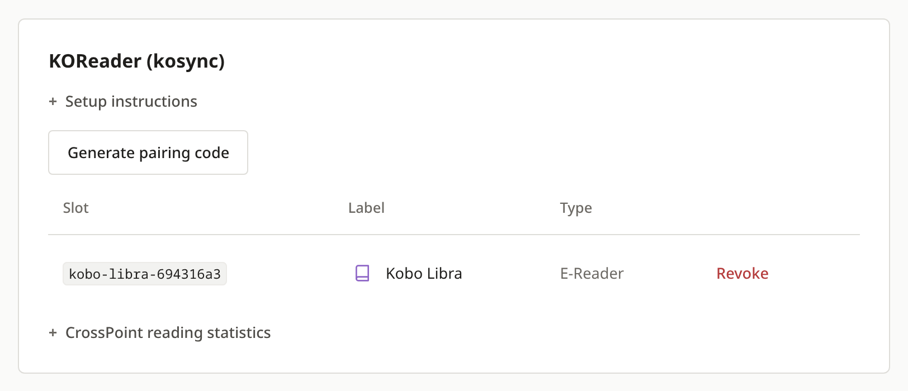
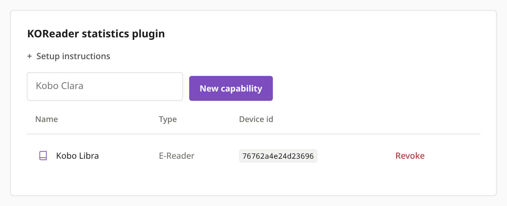

Library access
Lets KOReader list and download your books. It has no other access.
Download one file from your server, copy it onto the e-reader and start KOReader. It then lists your books, remembers where you stopped and sends your reading time to the server.
StartIt takes about five minutes, and you never type a password on the e-reader.

On your computer, sign into liseur-sync and open Settings, then Devices & integrations. In the Set up KOReader box, type a name for the e-reader, such as Kobo Libra, and press Download KOReader setup.
You get a ZIP. The file you need is patches/1-liseur-setup.lua inside it.
The ZIP contains logins for your library, so keep it private and delete it once the setup works.

Quit KOReader if it is running and plug the e-reader into your computer. In KOReader's folder, create a folder called patches if it is missing and copy 1-liseur-setup.lua into it. Then eject the e-reader.
| Kobo | .adds/koreader/ (the .adds folder is hidden, so show hidden files) |
|---|---|
| Kindle | koreader/ at the top level |
| PocketBook | applications/koreader/ |
KOReader from F-Droid on Android ignores patches. Use the manual setup there.
koreader/
├── plugins/
├── settings/
└── patches/
└── 1-liseur-setup.lua
The OPDS catalog and Progress sync are built into KOReader. The only add-on is the KoInsight plugin, which sends your reading time to the server, and the file downloads it for you. The first start takes longer than usual while it does. If the e-reader is offline, the setup runs again at the next start.
To check, open the top menu, tap the magnifier and choose OPDS catalog. Liseur Sync is in the list.

These are screenshots from a real KOReader set up with this file. Your books will differ.





The download holds three logins named after your e-reader. None of them is your account password, and each can be revoked on its own.

Lets KOReader list and download your books. It has no other access.

Used by KOReader's Progress sync to save where you stopped.

A private address that only the KoInsight plugin uses to send how long you read.
Download a separate setup for each e-reader and give each its own name. To remove one, press Revoke on the three entries with its name in Devices. Revoking one entry leaves the other two working.
Check that the file is at koreader/patches/1-liseur-setup.lua. Quit KOReader completely (menu, then Exit) before starting it again, because putting it to sleep is not enough. If the patches folder holds a file named .patches_disabled, delete it.
The e-reader was offline at the first start. Turn on Wi-Fi and restart KOReader. The plugin comes from its public project at one fixed version, and each file is checked against a known checksum before it is installed, so a changed file is refused.
The login in the file was revoked, or the file came from another server. Download a new setup from Devices and copy it over the old one.
Open a book and go to Tools, then Progress sync. It should say Logout, which means it is signed in, with Automatically keep documents in sync ticked. Push progress from this device now sends it immediately. Your server must use https unless its owner allowed plain http.
The manual setup lists the same settings to enter by hand. The ZIP's credentials.txt has every value.
It points Progress sync at your server and signs it in, adds Liseur Sync to the OPDS catalogs and sets the KoInsight address. Other settings stay as they are. It runs once, so you can delete it after KoInsight is installed.